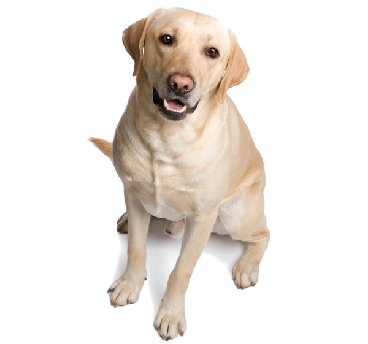

Hola mundo
Esta es mi primera pagina web
Esta es una pagina de perros
Hecha por Vanessa Almanzar Valdez


Lista de perros
Tres cosas que los perros aman
- Dormir
- Comer
- Jugar
Tres cosas que los perros odian
- Bañar
- Ir al veterinario
- Cortarse las uñas
Si quieres ver más fotos de perros da clic aquí
Si quieres ver más fotos de perros da clic aquí